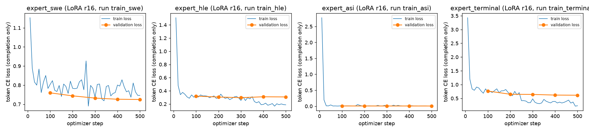
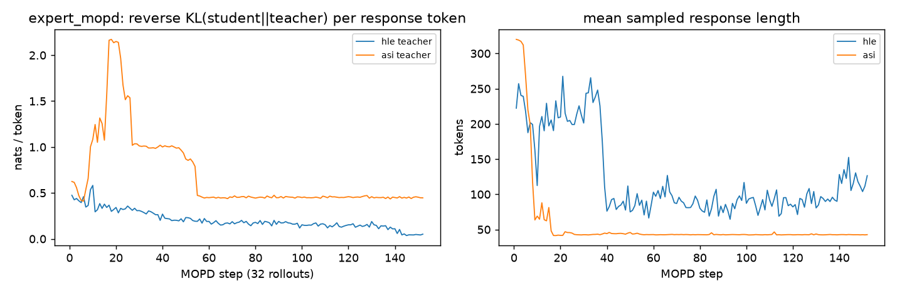

四个 LoRA 专家能否合成一个更强的 Qwen3-8B？——Linear / TIES / 多教师在线蒸馏的对照实验
候选人仓库：见 README · 模型：models/README.md · 所有数字由 scripts/aggregate_all.sh 从原始逐题结果重新生成 · 2026-10-18
摘要
以 Qwen3-8B 为基座，为 SWE-bench Pro、HLE、ASI-Bench、Terminal-Bench 2.0 各训练一个 LoRA 专家，再用 Linear、TIES 和自设计的多教师在线蒸馏（MOPD）得到单一模型，在四项上与 Base 同协议对比。按开发集选出的最终合版模型 TIES 宏平均 +0.04 个百分点（95% CI [−0.5, +0.6]），最好的 Linear 为 +0.82，均未达到 +3 的目标。主要原因是代理数据训练的专家本身没有能力；此外发现 TIES 让终端专家的输出格式接管了 40% 的 HLE 回答，本地 judge 的假阳性会把 Linear 的 HLE 提升从 2.0 虚高到 6.8。独立审计未发现数据污染；所有结果如实报告。
过程
- 基座：Qwen3-8B @ b968826，bf16，non-thinking 模板（35B-A3B 为 MoE，权重约 70GB，单卡 GB10 上训练 + 4 专家 + 多轮评测不可行；题目允许 7B 级）。
- 专家：每个 benchmark 一个，bf16 LoRA r16/α32、7 个投影层、lr 2e-4、有效 batch 8、500 步、上下文 4096、seed 42，固定取最终步。数据：SWE-bench train（issue→patch）、GSM8K（HLE 代理）、CSQA 模板（ASI 代理）、NL2SH-ALFA+SETA（终端）。13-gram 污染检查 0 命中。
- 单模型的三种得法：① Linear：4 个 ΔW 等权平均（可精确写成 rank-64 LoRA）；② TIES：每专家剪掉 80% 小幅值、按多数派选符号、只平均同号；③ MOPD（自设计）：学生=基座+新 LoRA，在自己的采样上逐 token 拟合领域教师（expert_hle / expert_asi）的完整词表分布（反向 KL），152 步。合并均在 ΔW 空间逐模块计算，与 PEFT 逐位一致。
- 最终合版模型的选择：按 4 个专家验证集上的平均 completion loss 选（不用任何测试数据）→ merged_ties（0.494；Linear 0.546，MOPD 1.139）。
- 评测（同一 sglang 服务、同一模板、同一预算）：HLE 纯文本 500 题（seed 42）；ASI-Bench seed31415 60 题；TB2 74 题（去掉 15 个端口 / 进程冲突的题），harbor+terminus-2，单次；SWE-bench Pro HARD-51 抽样子集，mini-swe-agent + 官方 patch 重判，只计 gold patch 本机通过的任务。所有偏离均在
configs/eval/benchmarks.yaml 标 DEVIATION。
- 硬件：DGX Spark（GB10，aarch64）做训练、合版、HLE/ASI；镜像只有 amd64 的 TB2/SWE 在租用的 L40S 容器（非特权，singularity）上跑——DGX 上 qemu 模拟连 gold patch 都得 0 分。
- 评测审核：官方 HLE judge（o3-mini）不可用，改用本地 Qwen3-8B judge。人工核查发现它大量假阳性（见结果），因此加了对所有模型一致、只会把「对」改成「错」的确定性审核，作为主指标；原始 judge 分数并列报告。
- 不确定性：同题配对 bootstrap（10k，seed 42）；HLE 与 TB2 各做一次重复运行。
结果
| 模型 | HLE (500) | ASI v2 (60) | TB2 (74) | SWE (4) | macro4 | Δ macro4 vs base [95% CI] | HLE 原始 judge |
|---|
| base | 2.80 | 0.45 | 0.00 | 0.00 | 0.81 | — | 4.40 |
| expert（本领域） | 4.20 (hle) | 0.00 (asi) | 0.00 (terminal) | 0.00 (swe) | — | — | 4.20 |
| merged_linear | 4.80 | 0.39 | 1.35 | 0.00 | 1.64 | +0.82 [0.0, +1.8] | 11.20 |
| merged_ties（最终） | 3.40 | 0.00 | 0.00 (72) | 0.00 | 0.85 | +0.04 [−0.5, +0.6] | 6.80 |
| mopd | 3.40 | 0.14 | 0.00 | 0.00 | 0.88 | +0.07 [−0.5, +0.6] | 4.00 |
逐项 Δ（95% CI）：Linear HLE +2.0 [−0.4, +4.4]、ASI −0.05、TB2 +1.35 [0, +4.1]；TIES HLE +0.6 [−1.4, +2.8]、ASI −0.45；MOPD HLE +0.6、ASI −0.31。ASI 为 v2：v1 未按任务声明建环境，缺包崩溃，已用 --sandbox task 重跑。重复运行：HLE base 2.8→3.6、Linear 4.8→5.2（同向）；TB2 第二次运行 base 1/71、Linear 0/74，Linear 的那 1 题是噪声。
- 未达到 +3 目标。HLE 上各模型都略有提升，但 CI 都包含 0；ASI 上所有模型都在地板（60 题最多 2 题拿到部分分）；TB2 接近地板，SWE 的 0 分受评测配置缺陷影响（Linear 第一次运行解出的 1 道 TB2 在第二次运行中没有复现，base 第二次运行反而解出 1 道，属于噪声）。
- 根因是专家没学到能力：HLE / ASI 用的是代理数据（GSM8K、CSQA 模板）；ASI 专家只学会了代理数据的模板（验证 loss 0.006）：它在 60/60 题都写了代码，但不比 base 强；NL→bash 的单轮数据教不会多轮 agent 行为（expert_terminal 0/74）。合版和蒸馏只能重新分配已有能力。
- TIES 的参数干扰：40%（198/500）的 HLE 回答变成一个 bash 代码块。Linear 乘 1/4 稀释了每个专家；TIES 的同号「不相交平均」不再稀释，幅值最大的专家（终端）因此接管了输出格式。
- 评测噪声可能大于真实差距：8B judge 会把照抄模板「Answer: {your chosen answer}」的回答判对（它看得到标准答案）。审核前 Linear 的 HLE 提升为 +6.8（显著），审核后为 +2.0（不显著）。
- MOPD：没有出现格式接管（0 个代码块回答），但也没有超过 Linear；学生忠实复制了教师在 ASI 代理训练题上的短模板回答（长度 320→43 token）。教师的质量决定了蒸馏的上限。
- 开发集选择的盲区：teacher-forced loss 选中了 TIES，却看不出它在自由生成时会切换格式。下次应改用生成式开发集。
- 下一步：① 真实 agent 轨迹和 HLE 格式的高难推理数据，先把专家训强；② 在生成式开发集上扫合版系数和 TIES 缩放；③ 多专家生成数据 → 蒸馏更大的学生（14B），4 个教师全部纳入；④ 官方 judge 重判，TB2 跑 5 次，SWE 跑完整 HARD-51。

图 1：4 个专家的 train / validation loss（未平滑；源数据 curves/source/）。ASI 验证 loss 降到 0.006，说明它在背模板。

图 2：MOPD 每步对领域教师的反向 KL 和采样回答长度。ASI 代理训练题上的长度塌缩到约 43 token，学生复制了教师的短模板。
成本：DGX ≈30.6 GPU·h（按 $1.5/h 折算）+ 租用 L40S 墙钟约 14 h，合计约 $60（logs/resources.csv）。主要偏离：8B 基座；HLE 抽 500 题、用本地 judge 加审核；ASI 用 seed31415，看图评分项记 0；TB2 74 题、单次、T=0.7、32K 上下文；SWE 只跑抽样子集（6 题，计分 4 题），而且评测配置有缺陷：patch 末尾换行被丢掉、agent 异常退出时修改丢失、32K 上下文不够、SWE 专家的训练格式与 agent 接口不匹配。修正换行后重新判分，base 仍然是 0，但 SWE 的 0 分不能说明模型能力（README §8）。merged_ties 的 TB2/SWE 推理服务经隧道由 DGX 提供，有 2 个 TB2 任务没有产生结果。